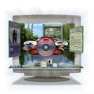

PROJECT LOOKING GLASS 1.0 AVAILABILITY
Sun is pleased to offer the next wave of Solaris 10 innovation by
announcing the release and general availability of Project Looking
Glass 1.0, an innovative 3D windowing system that delivers a full 3D
experimental desktop environment that runs on Solaris 10, Linux and
Windows operating systems. This release is the culmination of over
three years of hard work by the Project Looking Glass community. Not
only does it support the full range of innovative Project Looking Glass
features, such as slanted parked windows, sticky notes on the back of
windows, 3D desktop applications, and integrated X11 applications, but
it now also has the industrial strength stability and performance for
every day use. Take it out for a test drive and see the new dimension
Project Looking Glass can add to your desktop experience!
The Project Looking Glass 1.0 GA release can be downloaded from http://lg3d-core.dev.java.net/binary-builds.html
Project Looking Glass takes advantage of the new JDK 1.6 release and
offers many ground-breaking features such as:
+ Slanted parked windows - keep an eye on background windows which take
up less screen space because they are slanted backward.
+ Live icons - View the output of web browsers and media players even
when these applications are iconified.
+ Virtual overview of multiple virtual screens - Manage your
applications more effectively by "zooming out" to see all screens at
once.
+ Full integration of X11 windows in the 3D environment.
+ Run Project Looking Glass within GNOME/KDE or as a standalone
desktop.
+ Support for the latest Java 3D 1.5 release
+ Full 3D environment and native desktop application support on Solaris
and Linux. The full 3D environment is also supported on Windows, but
without native desktop application integration at this time.
Also available concurrently with this release is Plethora 1.0, a
NetBeans <http://www.netbeans.org>
module suite, which streamlines Project Looking Glass application
development. Plethora allows developers to create 3D interfaces that
combine utility and visual appeal. The developer is given control over
a wide range of Project Looking Glass GUI features by means of an
easy-to-use direct manipulation interface. Plethora 1.0 can
be downloaded from http://sourceforge.net/projects/auc-plethora
Project Looking Glass 1.0 is yet another example of Sun's continued
commitment and contributions to the open source community.
Haven't seen Project Looking Glass in action yet? Go see one
of the most successful commercial products built on Project Looking
Glass - GoMonkey - with their gesture recognition demo at www.gomonkey.at
<http://www.gomonkey.at>.
Also be sure to check out a Project Looking Glass virtual demo at http://blogs.sun.com/thaniwa/resource/trumplayer_low.swf.
For more information on Project Looking Glass and the LG3D community,
go to: http://lg3d-core.dev.java.net.